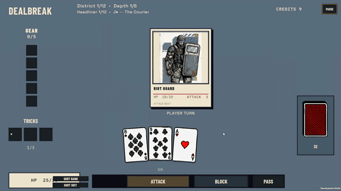

Make an Ace worth holding
Normal combat uses one card per attack. An Ace has a base attack value of 1. Pairing it with another card creates an offensive opportunity without introducing unrestricted poker-hand play.
Both cards target the same enemy and their modified damage combines into one action. A single critical roll can double that combined damage.

Simple rules, clear boundaries
| Selection | Result |
|---|---|
| Ace + Eight | Valid pair; one combined attack |
| Ace + Ace | Valid pair; one critical roll |
| Two + Eight | Invalid pair; no cards spent |
| One card | Normal single-card attack |
| Three cards | Not an Ace Pair |
Other multi-card patterns belong to specific Artifact rules. An invalid pair consumes neither cards nor critical randomness.
Burst damage has a cost
Offensive opportunity
A pair can remove a dangerous enemy before it attacks. Both cards' effects can contribute to the result, and a critical creates burst potential.
Defensive opportunity cost
Two cards leave the hand together. Those cards cannot block separate enemy attacks, and the hand does not automatically refill each turn.
The default 25% critical chance is prototype tuning. Hand capacity, Artifacts, damage caps, and conditional Ace return affect how valuable a pair becomes in a particular build.
How the action resolves
- Validate the pair and selected enemy.
- Commit both cards together.
- Calculate each card's modified attack and sum the damage.
- Apply action-level rules and one eligible seeded critical roll.
- Resolve ordered effects and the conditional Ace return.
On-play effects run once per card. A successful critical doubles the action damage once, after any applicable cap. Ace return remains subject to hand capacity and the runtime rule.
Evidence & next iteration
Focused Unity EditMode tests cover legal and invalid pairs, card consumption, damage, critical randomness, and effect ordering. The source notes also record a Game-scene integration check.
Next, observe when players spend a pair, keep it for later, or reserve its cards for defense. Use those decisions to evaluate selection feedback and critical tuning.
Automated and recorded integration evidence does not establish human-tested balance. Full verification scope is in the October 9 feature notes.